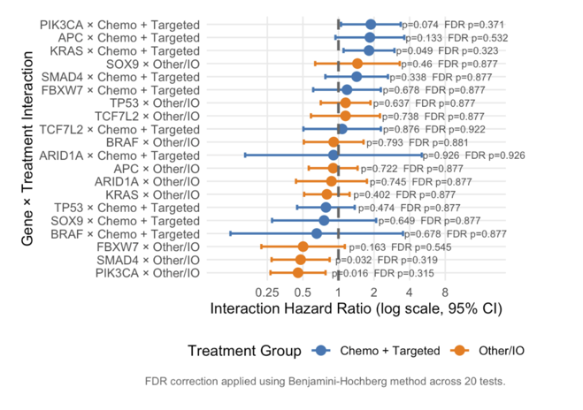
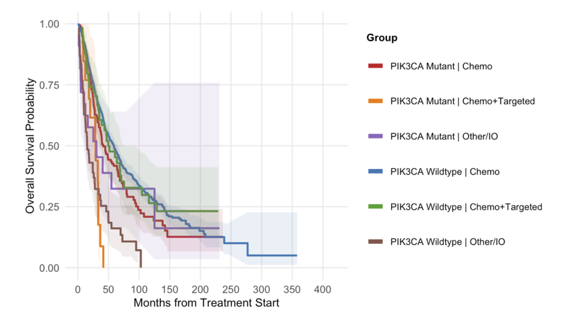

About
The MSK-CHORD cohort includes 5,543 colorectal cancer patients. We focused on metastatic colorectal cancer patients.
Our primary outcome was overall survival. We included patients who were diagnosed with metastatic colorectal cancer and started a first-line treatment within 30 days of diagnosis. Patients with missing overall survival status were dropped. Additionally, patients with missing MSI scores and missing TMB scores were dropped.
Methods
We fit Cox proportional hazards with the following covariates: gene of interest, mechanism of action (MoA) group, interaction between gene and MoA, MSI score, TMB, race, sex, and highest stage of cancer recorded. Analysis was performed in R using the survival package.
- Primary outcome: overall survival
- Model: Cox proportional hazards
- Covariates: age, sex, race, stage, MSI score, TMB, gene mutation, MoA, gene x MoA interaction
- Software: R version 4.5.2
Results
This forest plot shows the interaction hazard ratios, with a reference group of simple chemotherapy. We can see that a few gene x MoA interactions were significant prior to the FDR correction.

We can see that the PIK3CA gene mutation nominally has a worse overall survival compared to wildtype across treatment MoA group.

Team
- Medha Rao · University of Michigan